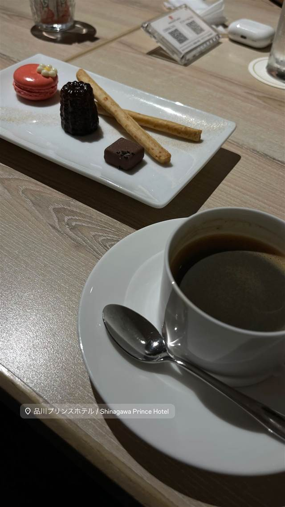
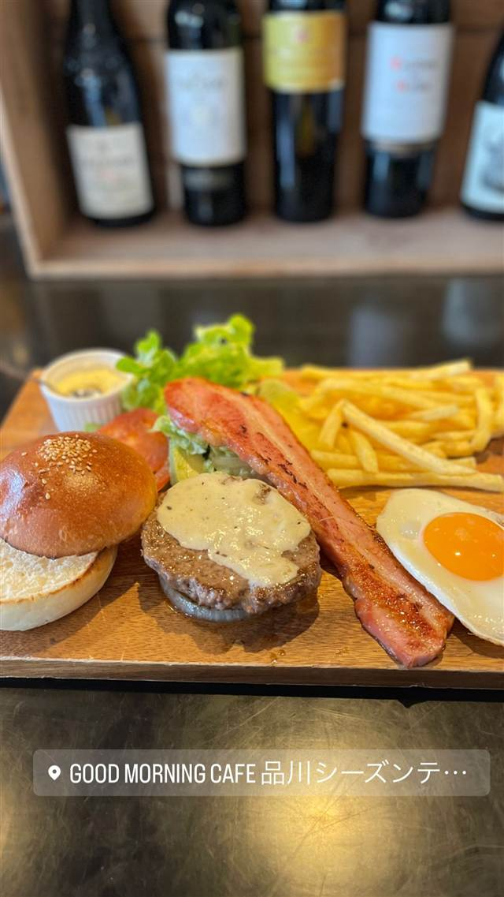
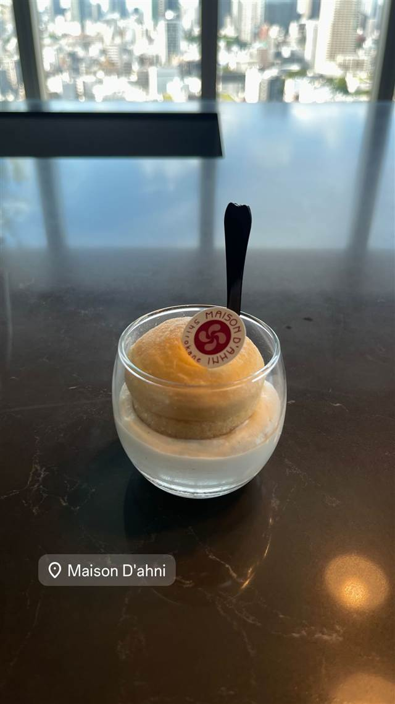

品川プリンスホテル
旧毛利家の邸宅跡地に1978年に開業した老舗ホテル
品川プリンスホテル / Shinagawa Prince Hotel
品川プリンスホテルは、旧毛利家の邸宅跡地に1978年に開業したホテルで、メインタワーは2024年に開業30周年を迎えた。品川駅前に水族館や映画館なども併設する一大エンターテインメントエリアを形成している。
TRIVIA
豆知識
- 敷地はもともと旧毛利元道公爵の邸宅跡地
- メインタワーは2024年に開業30周年を迎えた
REVIEWS
世間の評判
朝食・ビュッフェの豊富なメニューと混雑
- サーモンといくらの親子丼やだし巻き卵など和洋豊富なメニューを評価する声が多い
- 混雑時は料理を取るのに時間がかかり品切れになることもあるという声がある
OZmall
| 創業 | 1978年開業（現メインタワー、旧毛利家邸宅跡地） |
|---|---|
| どこから | 都心 |
| 場所 | 品川駅 東京都港区高輪4-10-30 |
| メモ | 水族館・映画館・フードコートなどを併設する大型シティホテル |
食べたもの：コーヒーと菓子
NEARBY
近い店・同じ系統の店
-
 ピザ 品川駅
Italian BAR KIMURAYA 品川
和とイタリアンを掛け合わせた、新鮮魚介と飲み放題スパークリングの一軒
昼 ¥1,000未満 夜 ¥3,000～¥3,999
ピザ 品川駅
Italian BAR KIMURAYA 品川
和とイタリアンを掛け合わせた、新鮮魚介と飲み放題スパークリングの一軒
昼 ¥1,000未満 夜 ¥3,000～¥3,999
-

カフェ 品川駅／高輪ゲートウェイ駅 GOOD MORNING CAFE 品川シーズンテラス 朝ランや朝散歩のあとに寄れる、朝から夜まで通し営業のカフェ 昼 ¥1,000～¥1,999 夜 ¥3,000～¥3,999 -
 ケーキ・パフェ 目白駅
AIGRE DOUCE（エーグルドゥース）
クープ・デュ・モンド準優勝シェフの苺のショートケーキ
昼 ¥1,000～¥1,999 夜 ¥1,000～¥1,999
ケーキ・パフェ 目白駅
AIGRE DOUCE（エーグルドゥース）
クープ・デュ・モンド準優勝シェフの苺のショートケーキ
昼 ¥1,000～¥1,999 夜 ¥1,000～¥1,999
-
 ケーキ・パフェ 自由が丘
パティスリー パリ セヴェイユ
ラデュレ仕込みの技が光るカヌレ、食べログ百名店の一軒
昼 ¥1,000～¥1,999 夜 ¥1,000～¥1,999
ケーキ・パフェ 自由が丘
パティスリー パリ セヴェイユ
ラデュレ仕込みの技が光るカヌレ、食べログ百名店の一軒
昼 ¥1,000～¥1,999 夜 ¥1,000～¥1,999
-
 ケーキ・パフェ 代々木公園駅
ナタ・デ・クリスチアノ（Nata de Cristiano's）
姉妹店の人気デザートが独立したポルトガル風エッグタルト
昼 ～¥999 夜 ～¥999
ケーキ・パフェ 代々木公園駅
ナタ・デ・クリスチアノ（Nata de Cristiano's）
姉妹店の人気デザートが独立したポルトガル風エッグタルト
昼 ～¥999 夜 ～¥999
-

ケーキ・パフェ 白金高輪駅 メゾン・ダーニ（MAISON D'AHNI） 本場ビアリッツの老舗で出会った郷土菓子ガトーバスク 昼 ¥1,000～¥1,999
ONSEN & SAUNA